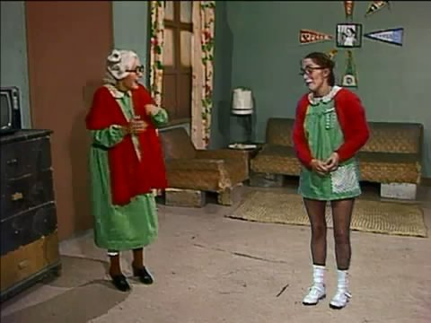

Dona Neves (Maria Antonieta de las Nieves)
Bisavó da Chiquinha, Dona Neves é muito parecida com a sua bisneta tanto no físico quanto na astúcia. A personagem apareceu originalmente em 1978 e acabou por substituir o Seu Madruga quando ele deixou o programa em 1979.
Atrapalhada e um pouco senil, Dona Neves tem uma rivalidade com Dona Florinda e parece ter herdado a mesma dívida de 14 meses de aluguel do seu neto, o Seu Madruga.